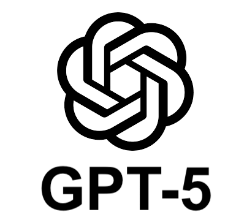

Bem-vindo ao Painel das IAs
Brasília Mais TI e SENAI DF
O que o Game Design IA faz?
- Analisar o design de games em produtos publicados
- Identificar a lógica de criação de um jogo
- Esquematizar a Mecânica do jogo
- Definir aspectos narrativos do jogo
- Investigar aspectos de viabilidade do jogo
- Ele vê o jogo como um produto
- Utiliza a IA com ética e responsabilidade de forma a otimizar processos de design
Tarefas dos Alunos
- Elaboração do Game Design Document (GDD)
- prompt engineering reverso para escrita em libras

- Few-Shot Prompting: use um exemplo para o modelo aprender
- item 3
- item 4